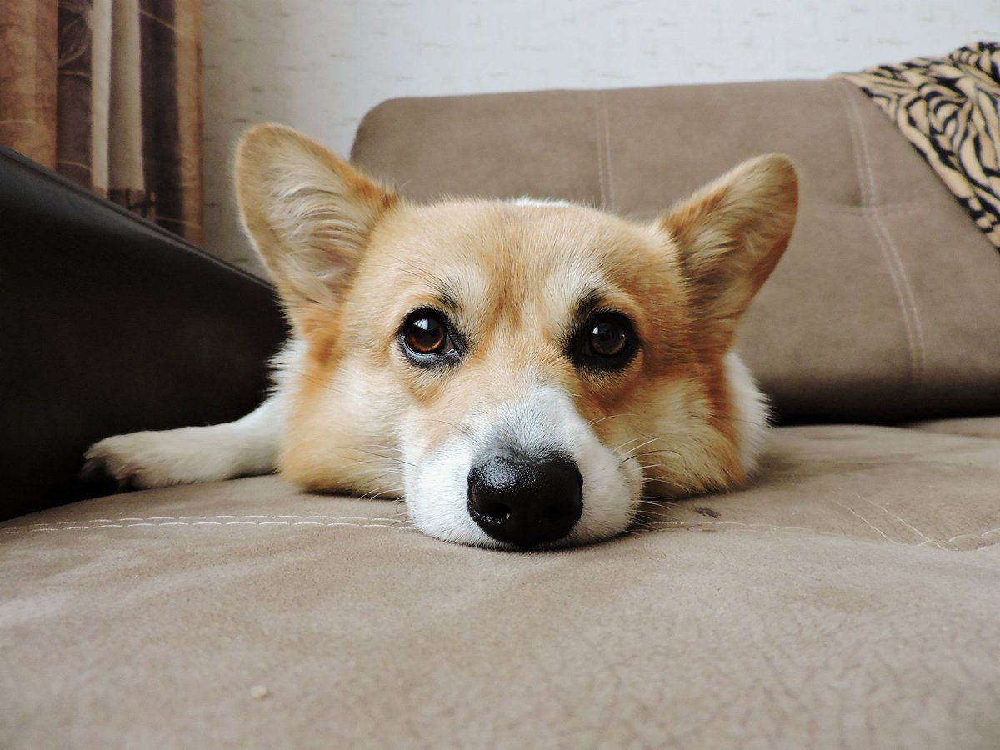

Корги
Корги пемброк — порода, выведенная в Пембрукшире, предположительно, из собак фламандского происхождения и ведущая свою историю с XIII века

Происхождение слова «корги» достоверно неизвестно. Существуют две теории на этот счет. По основной версии, слово «corgi» образовано от валлийского cor gi ([kɔrɡi]) cor, «карлик» и ci ([kiː]), «собака». Другие источники, однако, объясняют происхождение «corgi» изменённым словом cur («смотреть, сторожить») и ci («собака»).